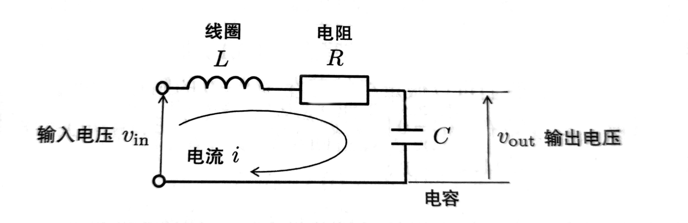
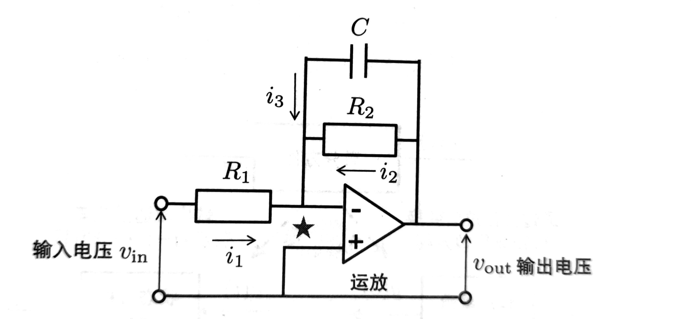

控制系统基础
控制系统建模
对于一个输入为 \(u\)，输出为 \(y\) 的动态系统，当 \(t\) 时刻的输出 \(y(t)\) 由直到 \(t\) 时刻为止的输入和输出来决定的时候，这个系统可以用下面的微分方程来表示：
$$ \frac{d^n}{dt^n}y(t) + a_{n-1}\frac{d^{n-1}}{dt^{n-1}}y(t) + \cdots + a_1\frac{d}{dt}y(t) + a_0y(t) \\ = b_m\frac{d^m}{dt^m}u(t) + b_{m-1}\frac{d^{m-1}}{dt^{m-1}}u(t) + \cdots + b_1\frac{d}{dt}u(t) + b_0u(t) $$
微分方程很难求解以及分析系统行为，所以通常会将微分方程转换成传递函数模型或者状态空间模型。
传递函数
传递函数模型使用复变函数来表现系统模型，可以通过将微分方程两边进行初始值为0的拉普拉斯变换得到。
拉普拉斯变换的定义：\(g(s) = \mathcal{L}[g(t)] = \int_0^{\infty}g(\tau)e^{-s\tau}d\tau\)
微分的拉普拉斯变换
$$ \begin{align} \mathcal{L}[\dot y(t)] &= \int_0^{\infty}\dot y(\tau)e^{-s\tau}d\tau \\ &= [y(\tau)e^{-s\tau}]_0^{\infty} - \int_0^{\infty}-sy(\tau)e^{-s\tau}d\tau \\ &= [y(\tau)e^{-s\tau}]_0^{\infty} + s\int_0^{\infty}y(\tau)e^{-s\tau}d\tau \\ &= y(\infty) -y(0) + s\mathcal{L}[y(t)] \\ &= sy(s) - y(0) \end{align} $$
令 \(y(0) = 0\)，则得到 \(\mathcal{L}[\dot y(t)] = sy(s)\)
积分的拉普拉斯变换
令 \(f(t) = \int_0^ty(\tau)d\tau\), 则 \(\dot f(t) = y(t)\)
$$ \begin{align} \mathcal{L}[\dot f(t)] &= sf(s) - f(0) \\ &= sf(s) - \int_0^0y(\tau)d\tau \\ &= sf(s) \end{align} $$
$$ \mathcal{L}[\int_0^ty(\tau)d\tau] = \mathcal{L}[f(t)] = f(s) = \frac{1}{s}\mathcal{L}[\dot f(t)] = \frac{1}{s}\mathcal{L}[y(t)] = \frac{1}{s}y(s) $$
状态空间
状态空间模型通过矩阵的形式将多元高阶微分方程表示成一阶微分方程的形式。传递函数模型表达的是输入和输出的关系，而状态空间模型表达的是输入->状态->输出的关系。我们可以自由地选择状态变量。此外，状态空间模型也可以处理初始值不为0的情况。
$$ \mathcal{P}: \begin{cases} \mathbf{\dot x}(t) &= \mathbf{A} \mathbf{x}(t) + \mathbf{B} \mathbf{u}(t) \\ \mathbf{y}(t) &= \mathbf{C} \mathbf{x}(t) + \mathbf{D} \mathbf{u}(t) \end{cases} $$
这里的\(\mathbf{x}\)为状态，\(\mathbf{u}\)为输入，\(\mathbf{y}\)为输出，\(\mathbf{A}\), \(\mathbf{B}\), \(\mathbf{C}\), \(\mathbf{D}\)为常数矩阵。
RLC 电路

根据欧姆定律， $$ v_{in}(t) = L\frac{d}{dt}i(t) + Ri(t) + \frac{1}{C}\int_{0}^{t}i(\tau) d\tau $$
设定输出为 \(y(t) = v_{out}(t) = \frac{1}{C}\int_{0}^{t}i(\tau) d\tau\), 则 \(C\dot y(t) = i(t)\)
设定输入为 \(u(t) = v_{in}(t)\)
可以得到 $$ LC\ddot y(t) + RC\dot y(t) + y(t) = u(t) $$
传递函数模型
对微分方程两边做拉普拉斯变换，得到 $$ LCs^2y(s) + RCsy(s) + y(s) = u(s) $$
于是传递函数模型等于 $$ \mathcal{P} = \frac{y(s)}{u(s)} = \frac{1}{LCs^2 + RCs + 1} $$
状态空间模型
设 \(\mathbf{x}(t) = \left[ \begin{matrix} \int_0^t i(\tau)d\tau \\ i(t) \\ \end{matrix} \right] \)， \(u(t) = v_{in}\)，\(y(t) = \frac{1}{C}\int_0^t i(\tau)d\tau\)
则状态方程为 $$ \mathbf{\dot x}(t) = \left[ \begin{matrix} 0& 1 \\ -\frac{1}{LC}& -\frac{R}{L} \\ \end{matrix}\right] \mathbf{x}(t) + \left[ \begin{matrix} 0 \\ \frac{1}{L} \\ \end{matrix} \right] u(t) $$
而输出方程为 $$ y(t) = \left[ \begin{matrix} \frac{1}{C} \quad 0 \end{matrix}\right] \mathbf{x}(t) $$
运放电路

根据运放的"虚短"特性，可以得到 \(i_1(t) = \frac{v_{in}(t)}{R_1}\), \(i_2(t) = \frac{v_{out}(t)}{R_2}\)
以及 \(v_{out}(t) = \frac{1}{C}\int_{0}^{\tau}i_3(\tau) d\tau\)， 即 \(i_3(t) = C\dot v_{out}\)
根据运放的"虚断"特性，\(i_1(t) + i_2(t) + i_3(t) = 0\)
代入方程得到 $$ \frac{v_{in}(t)}{R_1} + \frac{v_{out}(t)}{R_2} + C\dot v_{out}(t) = 0 $$
设定输出 \(y(t)=v_{out}(t)\), 设定输入 \(u(t)=v_{in}(t)\)
因此可以得到 $$R_1R_2C\dot y(t) + R_1y(t) = -R_2u(t)$$
传递函数模型
对微分方程两边做拉普拉斯变换，得到 \(R_1R_2Csy(s) + R_1y(s) = -R_2u(s)\), 于是传递函数模型等于 $$ \mathcal{P} = \frac{y(s)}{u(s)} = \frac{-R_2}{R_1R_2Cs + R_1} $$
状态空间模型
设 \(x(t) = v_{out}(t), u(t)=v_{in}(t),y(t)=v_{out}(t)\)，则可得到状态方程 $$ \dot x(t) = -\frac{1}{CR_2}x(t) - \frac{1}{CR_1}u(t) $$ 输出方程为 $$ y(t)=x(t) $$